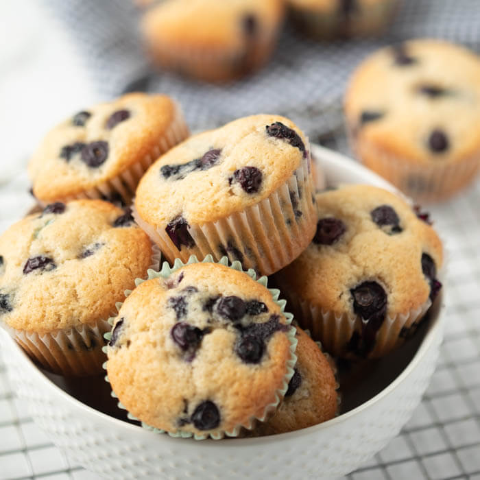

Blueberry Muffins

Description:
Blueberry muffins are a staple in the baking industry. At almost any cafe or bakery you go to that sell muffins, you are most likely able to
find some that are with blueberries. This recipe is pretty simple to make as we are only including blueberries into the muffin mix.
Ingredients:
- Softened Butter
- Sugar
- Eggs
- Vanilla Extract
- Flour
- Salt
- Baking Powder
- Milk
- Blueberries
- Sugar
Steps:
- Preheat the oven to 375.
- Mix together the butter, sugar, eggs, and vanilla extract together in a mixing bowl.
- Now add in the flour, salt, milk, and baking powder into the mix as well and mix good.
- Crush some blueberries to add to the mix as well as leaving some of the blueberries whole as well folding it into the mix.
- Place the mix into a muffin tray, and put in the oven for around 30-35 minutes.
- Once the muffins are cooked, take out of the oven and allow it to cool and rest.